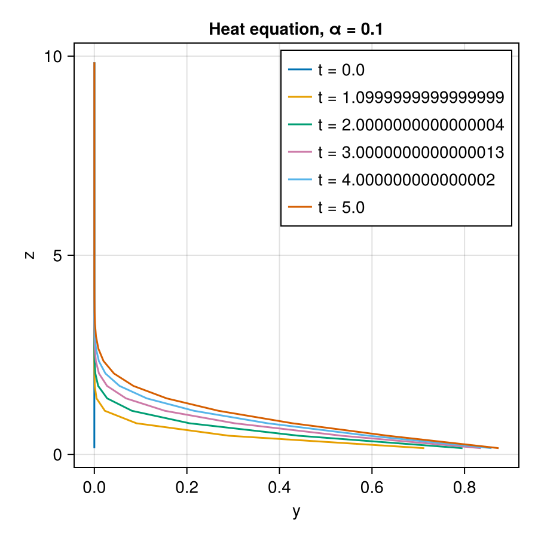

Tutorial: Solve a column PDE
This tutorial is available as a Jupyter notebook.
This tutorial solves the heat equation on a vertical column with the finite-difference operators and advances it in time with ClimaTimeSteppers. It shows how a boundary value is imposed through an operator's boundary condition and how a ClimaCore field serves as the state of a time stepper.
The equation is
\[\frac{\partial y}{\partial t} = \alpha\, \nabla \cdot \nabla y,\]
with y(0) = 1 at the bottom (Dirichlet) and ∂y/∂z(10) = 0 at the top (Neumann), starting from y = 0.
using ClimaComms
ClimaComms.@import_required_backends
using IntervalSets
import ClimaCore: Domains, Meshes, Spaces, Fields, Geometry, Operators
import ClimaTimeSteppers as CTS
using CairoMakie
CairoMakie.activate!(type = "png")1. The column
domain = Domains.IntervalDomain(
Geometry.ZPoint(0.0) .. Geometry.ZPoint(10.0),
boundary_names = (:bottom, :top),
)
mesh = Meshes.IntervalMesh(domain, nelems = 32)
device = ClimaComms.device()
center_space = Spaces.CenterFiniteDifferenceSpace(device, mesh)
z = Fields.coordinate_field(center_space).z
y0 = zeros(center_space)Float64-valued Field:
[0.0, 0.0, 0.0, 0.0, 0.0, 0.0, 0.0, 0.0, 0.0, 0.0 … 0.0, 0.0, 0.0, 0.0, 0.0, 0.0, 0.0, 0.0, 0.0, 0.0]2. The tendency
The state lives on cell centers. There is no node at the bottom boundary, so the Dirichlet condition enters through the gradient at the first face: Operators.gradient_c2f_dirichlet builds the SetGradient boundary stencil that a prescribed boundary value implies, ∂y/∂ξ³[½] = 2 (y[1] − 1) for a value of 1. The Neumann condition at the top is a SetGradient with a zero covariant component. The face-to-center divergence then needs no boundary conditions of its own.
function heat_tendency!(dydt, y, α, t)
∇y = Operators.gradient_c2f_dirichlet(
y;
bottom = 1.0,
top = Operators.SetGradient(Geometry.Covariant3Vector(0.0)),
)
divf2c = Operators.DivergenceF2C()
@. dydt = α * divf2c(∇y)
return dydt
endheat_tendency! (generic function with 1 method)3. Time integration
A ClimaCore field is a valid state for ClimaTimeSteppers: the tendency is the explicit part of a ClimaODEFunction, and the third-order strong-stability-preserving Runge–Kutta scheme advances it.
α = 0.1
prob = CTS.ODEProblem(
CTS.ClimaODEFunction(; T_exp! = heat_tendency!),
y0,
(0.0, 5.0),
α,
)
sol = CTS.solve(
prob,
CTS.ExplicitAlgorithm(CTS.SSP33ShuOsher()),
dt = 0.1,
saveat = collect(0.0:1.0:5.0),
)ClimaTimeSteppers.ODESolution{Float64, ClimaCore.Fields.Field{ClimaCore.DataLayouts.VIJFH{Float64, 32, 1, 1, 1, ClimaCore.DataLayouts.ThisThreadPool, Array{Float64, 5}}, ClimaCore.Spaces.FiniteDifferenceSpace{ClimaCore.Grids.FiniteDifferenceGrid{ClimaCore.Topologies.IntervalTopology{ClimaComms.SingletonCommsContext{ClimaComms.CPUSingleThreaded}, ClimaCore.Meshes.IntervalMesh{ClimaCore.Meshes.Uniform, ClimaCore.Domains.IntervalDomain{ClimaCore.Geometry.ZPoint{Float64}, Tuple{Symbol, Symbol}}, LinRange{ClimaCore.Geometry.ZPoint{Float64}, Int64}, Nothing}, @NamedTuple{bottom::Int64, top::Int64}}, ClimaCore.Geometry.CartesianGlobalGeometry, ClimaCore.DataLayouts.VIJFH{ClimaCore.Geometry.LocalGeometry{(3,), ClimaCore.Geometry.ZPoint{Float64}, Float64, ClimaCore.Geometry.Tensor{2, Float64, Tuple{ClimaCore.Geometry.Components{ClimaCore.Geometry.Orthonormal, (1, 2, 3)}, ClimaCore.Geometry.Components{ClimaCore.Geometry.Covariant, (1, 2, 3)}}, StaticArraysCore.SMatrix{3, 3, Float64, 9}}, ClimaCore.Geometry.Tensor{2, Float64, Tuple{ClimaCore.Geometry.Components{ClimaCore.Geometry.Contravariant, (1, 2, 3)}, ClimaCore.Geometry.Components{ClimaCore.Geometry.Contravariant, (1, 2, 3)}}, StaticArraysCore.SMatrix{3, 3, Float64, 9}}}, 32, 1, 1, 1, ClimaCore.DataLayouts.ThisThreadPool, Array{Float64, 5}}, ClimaCore.DataLayouts.VIJFH{ClimaCore.Geometry.LocalGeometry{(3,), ClimaCore.Geometry.ZPoint{Float64}, Float64, ClimaCore.Geometry.Tensor{2, Float64, Tuple{ClimaCore.Geometry.Components{ClimaCore.Geometry.Orthonormal, (1, 2, 3)}, ClimaCore.Geometry.Components{ClimaCore.Geometry.Covariant, (1, 2, 3)}}, StaticArraysCore.SMatrix{3, 3, Float64, 9}}, ClimaCore.Geometry.Tensor{2, Float64, Tuple{ClimaCore.Geometry.Components{ClimaCore.Geometry.Contravariant, (1, 2, 3)}, ClimaCore.Geometry.Components{ClimaCore.Geometry.Contravariant, (1, 2, 3)}}, StaticArraysCore.SMatrix{3, 3, Float64, 9}}}, 33, 1, 1, 1, ClimaCore.DataLayouts.ThisThreadPool, Array{Float64, 5}}}, ClimaCore.Grids.CellCenter}}, ClimaTimeSteppers.ODEProblem{ClimaTimeSteppers.ClimaODEFunction{ClimaTimeSteppers.var"#18#22"{typeof(Main.heat_tendency!)}, Nothing, Nothing, Returns{Nothing}, Returns{Nothing}, Returns{Nothing}, Returns{Nothing}, Returns{Nothing}, Returns{Nothing}, ClimaTimeSteppers.UpdateEvery{ClimaTimeSteppers.EndOfStage}, ClimaTimeSteppers.UpdateEvery{ClimaTimeSteppers.EndOfStep}, false, true, true, false, false}, ClimaCore.Fields.Field{ClimaCore.DataLayouts.VIJFH{Float64, 32, 1, 1, 1, ClimaCore.DataLayouts.ThisThreadPool, Array{Float64, 5}}, ClimaCore.Spaces.FiniteDifferenceSpace{ClimaCore.Grids.FiniteDifferenceGrid{ClimaCore.Topologies.IntervalTopology{ClimaComms.SingletonCommsContext{ClimaComms.CPUSingleThreaded}, ClimaCore.Meshes.IntervalMesh{ClimaCore.Meshes.Uniform, ClimaCore.Domains.IntervalDomain{ClimaCore.Geometry.ZPoint{Float64}, Tuple{Symbol, Symbol}}, LinRange{ClimaCore.Geometry.ZPoint{Float64}, Int64}, Nothing}, @NamedTuple{bottom::Int64, top::Int64}}, ClimaCore.Geometry.CartesianGlobalGeometry, ClimaCore.DataLayouts.VIJFH{ClimaCore.Geometry.LocalGeometry{(3,), ClimaCore.Geometry.ZPoint{Float64}, Float64, ClimaCore.Geometry.Tensor{2, Float64, Tuple{ClimaCore.Geometry.Components{ClimaCore.Geometry.Orthonormal, (1, 2, 3)}, ClimaCore.Geometry.Components{ClimaCore.Geometry.Covariant, (1, 2, 3)}}, StaticArraysCore.SMatrix{3, 3, Float64, 9}}, ClimaCore.Geometry.Tensor{2, Float64, Tuple{ClimaCore.Geometry.Components{ClimaCore.Geometry.Contravariant, (1, 2, 3)}, ClimaCore.Geometry.Components{ClimaCore.Geometry.Contravariant, (1, 2, 3)}}, StaticArraysCore.SMatrix{3, 3, Float64, 9}}}, 32, 1, 1, 1, ClimaCore.DataLayouts.ThisThreadPool, Array{Float64, 5}}, ClimaCore.DataLayouts.VIJFH{ClimaCore.Geometry.LocalGeometry{(3,), ClimaCore.Geometry.ZPoint{Float64}, Float64, ClimaCore.Geometry.Tensor{2, Float64, Tuple{ClimaCore.Geometry.Components{ClimaCore.Geometry.Orthonormal, (1, 2, 3)}, ClimaCore.Geometry.Components{ClimaCore.Geometry.Covariant, (1, 2, 3)}}, StaticArraysCore.SMatrix{3, 3, Float64, 9}}, ClimaCore.Geometry.Tensor{2, Float64, Tuple{ClimaCore.Geometry.Components{ClimaCore.Geometry.Contravariant, (1, 2, 3)}, ClimaCore.Geometry.Components{ClimaCore.Geometry.Contravariant, (1, 2, 3)}}, StaticArraysCore.SMatrix{3, 3, Float64, 9}}}, 33, 1, 1, 1, ClimaCore.DataLayouts.ThisThreadPool, Array{Float64, 5}}}, ClimaCore.Grids.CellCenter}}, Tuple{Float64, Float64}, Float64}, ClimaTimeSteppers.IMEXAlgorithm{ClimaTimeSteppers.SSP, ClimaTimeSteppers.SSP33ShuOsher, ClimaTimeSteppers.IMEXTableau{ClimaTimeSteppers.SparseCoeffs{(3, 3), (true, false, false, true, true, false, true, true, true), StaticArraysCore.SMatrix{3, 3, Float64, 9}}, ClimaTimeSteppers.SparseCoeffs{(3,), (false, false, false), StaticArraysCore.SVector{3, Float64}}, ClimaTimeSteppers.SparseCoeffs{(3,), (true, false, false), StaticArraysCore.SVector{3, Float64}}, ClimaTimeSteppers.SparseCoeffs{(3, 3), (true, false, false, true, true, false, true, true, true), StaticArraysCore.SMatrix{3, 3, Float64, 9}}, ClimaTimeSteppers.SparseCoeffs{(3,), (false, false, false), StaticArraysCore.SVector{3, Float64}}, ClimaTimeSteppers.SparseCoeffs{(3,), (true, false, false), StaticArraysCore.SVector{3, Float64}}}, Nothing, @NamedTuple{cast_tableau_to_state_eltype::Bool}}}([0.0, 1.0999999999999999, 2.0000000000000004, 3.0000000000000013, 4.000000000000002, 5.0], ClimaCore.Fields.Field{ClimaCore.DataLayouts.VIJFH{Float64, 32, 1, 1, 1, ClimaCore.DataLayouts.ThisThreadPool, Array{Float64, 5}}, ClimaCore.Spaces.FiniteDifferenceSpace{ClimaCore.Grids.FiniteDifferenceGrid{ClimaCore.Topologies.IntervalTopology{ClimaComms.SingletonCommsContext{ClimaComms.CPUSingleThreaded}, ClimaCore.Meshes.IntervalMesh{ClimaCore.Meshes.Uniform, ClimaCore.Domains.IntervalDomain{ClimaCore.Geometry.ZPoint{Float64}, Tuple{Symbol, Symbol}}, LinRange{ClimaCore.Geometry.ZPoint{Float64}, Int64}, Nothing}, @NamedTuple{bottom::Int64, top::Int64}}, ClimaCore.Geometry.CartesianGlobalGeometry, ClimaCore.DataLayouts.VIJFH{ClimaCore.Geometry.LocalGeometry{(3,), ClimaCore.Geometry.ZPoint{Float64}, Float64, ClimaCore.Geometry.Tensor{2, Float64, Tuple{ClimaCore.Geometry.Components{ClimaCore.Geometry.Orthonormal, (1, 2, 3)}, ClimaCore.Geometry.Components{ClimaCore.Geometry.Covariant, (1, 2, 3)}}, StaticArraysCore.SMatrix{3, 3, Float64, 9}}, ClimaCore.Geometry.Tensor{2, Float64, Tuple{ClimaCore.Geometry.Components{ClimaCore.Geometry.Contravariant, (1, 2, 3)}, ClimaCore.Geometry.Components{ClimaCore.Geometry.Contravariant, (1, 2, 3)}}, StaticArraysCore.SMatrix{3, 3, Float64, 9}}}, 32, 1, 1, 1, ClimaCore.DataLayouts.ThisThreadPool, Array{Float64, 5}}, ClimaCore.DataLayouts.VIJFH{ClimaCore.Geometry.LocalGeometry{(3,), ClimaCore.Geometry.ZPoint{Float64}, Float64, ClimaCore.Geometry.Tensor{2, Float64, Tuple{ClimaCore.Geometry.Components{ClimaCore.Geometry.Orthonormal, (1, 2, 3)}, ClimaCore.Geometry.Components{ClimaCore.Geometry.Covariant, (1, 2, 3)}}, StaticArraysCore.SMatrix{3, 3, Float64, 9}}, ClimaCore.Geometry.Tensor{2, Float64, Tuple{ClimaCore.Geometry.Components{ClimaCore.Geometry.Contravariant, (1, 2, 3)}, ClimaCore.Geometry.Components{ClimaCore.Geometry.Contravariant, (1, 2, 3)}}, StaticArraysCore.SMatrix{3, 3, Float64, 9}}}, 33, 1, 1, 1, ClimaCore.DataLayouts.ThisThreadPool, Array{Float64, 5}}}, ClimaCore.Grids.CellCenter}}[Float64-valued Field:
[0.0, 0.0, 0.0, 0.0, 0.0, 0.0, 0.0, 0.0, 0.0, 0.0 … 0.0, 0.0, 0.0, 0.0, 0.0, 0.0, 0.0, 0.0, 0.0, 0.0], Float64-valued Field:
[0.71288, 0.290429, 0.0909331, 0.0228379, 0.00475865, 0.000843834, 0.000129812, 1.75798e-5, 2.11966e-6, 2.29559e-7 … 1.93066e-23, 6.0429e-25, 1.7041e-26, 4.29205e-28, 9.54311e-30, 1.84342e-31, 3.02409e-33, 4.07148e-35, 4.25377e-37, 3.11409e-39], Float64-valued Field:
[0.79567, 0.441286, 0.205624, 0.0813748, 0.0277362, 0.00825645, 0.00217375, 0.00051177, 0.000108765, 2.10353e-5 … 1.79615e-17, 1.42207e-18, 1.07183e-19, 7.6964e-21, 5.26838e-22, 3.43961e-23, 2.14262e-24, 1.27378e-25, 7.22884e-27, 4.11706e-28], Float64-valued Field:
[0.835409, 0.534355, 0.303165, 0.152621, 0.0684478, 0.0275074, 0.00997066, 0.00328129, 0.000986593, 0.000272604 … 4.24639e-14, 5.23169e-15, 6.1801e-16, 7.00794e-17, 7.63647e-18, 8.00435e-19, 8.07754e-20, 7.85432e-21, 7.36918e-22, 7.24458e-23], Float64-valued Field:
[0.85832, 0.592863, 0.374309, 0.215566, 0.113279, 0.0544266, 0.0239822, 0.00972635, 0.00364473, 0.00126682 … 6.07317e-12, 9.95514e-13, 1.56883e-13, 2.37971e-14, 3.4784e-15, 4.90448e-16, 6.67707e-17, 8.78533e-18, 1.11991e-18, 1.5416e-19], Float64-valued Field:
[0.873715, 0.633814, 0.4281, 0.268555, 0.156323, 0.0844602, 0.0424079, 0.0198249, 0.008648, 0.00352881 … 2.06147e-10, 4.17142e-11, 8.12922e-12, 1.52747e-12, 2.77027e-13, 4.85442e-14, 8.22681e-15, 1.34966e-15, 2.15194e-16, 3.79886e-17]], ClimaTimeSteppers.ODEProblem{ClimaTimeSteppers.ClimaODEFunction{ClimaTimeSteppers.var"#18#22"{typeof(Main.heat_tendency!)}, Nothing, Nothing, Returns{Nothing}, Returns{Nothing}, Returns{Nothing}, Returns{Nothing}, Returns{Nothing}, Returns{Nothing}, ClimaTimeSteppers.UpdateEvery{ClimaTimeSteppers.EndOfStage}, ClimaTimeSteppers.UpdateEvery{ClimaTimeSteppers.EndOfStep}, false, true, true, false, false}, ClimaCore.Fields.Field{ClimaCore.DataLayouts.VIJFH{Float64, 32, 1, 1, 1, ClimaCore.DataLayouts.ThisThreadPool, Array{Float64, 5}}, ClimaCore.Spaces.FiniteDifferenceSpace{ClimaCore.Grids.FiniteDifferenceGrid{ClimaCore.Topologies.IntervalTopology{ClimaComms.SingletonCommsContext{ClimaComms.CPUSingleThreaded}, ClimaCore.Meshes.IntervalMesh{ClimaCore.Meshes.Uniform, ClimaCore.Domains.IntervalDomain{ClimaCore.Geometry.ZPoint{Float64}, Tuple{Symbol, Symbol}}, LinRange{ClimaCore.Geometry.ZPoint{Float64}, Int64}, Nothing}, @NamedTuple{bottom::Int64, top::Int64}}, ClimaCore.Geometry.CartesianGlobalGeometry, ClimaCore.DataLayouts.VIJFH{ClimaCore.Geometry.LocalGeometry{(3,), ClimaCore.Geometry.ZPoint{Float64}, Float64, ClimaCore.Geometry.Tensor{2, Float64, Tuple{ClimaCore.Geometry.Components{ClimaCore.Geometry.Orthonormal, (1, 2, 3)}, ClimaCore.Geometry.Components{ClimaCore.Geometry.Covariant, (1, 2, 3)}}, StaticArraysCore.SMatrix{3, 3, Float64, 9}}, ClimaCore.Geometry.Tensor{2, Float64, Tuple{ClimaCore.Geometry.Components{ClimaCore.Geometry.Contravariant, (1, 2, 3)}, ClimaCore.Geometry.Components{ClimaCore.Geometry.Contravariant, (1, 2, 3)}}, StaticArraysCore.SMatrix{3, 3, Float64, 9}}}, 32, 1, 1, 1, ClimaCore.DataLayouts.ThisThreadPool, Array{Float64, 5}}, ClimaCore.DataLayouts.VIJFH{ClimaCore.Geometry.LocalGeometry{(3,), ClimaCore.Geometry.ZPoint{Float64}, Float64, ClimaCore.Geometry.Tensor{2, Float64, Tuple{ClimaCore.Geometry.Components{ClimaCore.Geometry.Orthonormal, (1, 2, 3)}, ClimaCore.Geometry.Components{ClimaCore.Geometry.Covariant, (1, 2, 3)}}, StaticArraysCore.SMatrix{3, 3, Float64, 9}}, ClimaCore.Geometry.Tensor{2, Float64, Tuple{ClimaCore.Geometry.Components{ClimaCore.Geometry.Contravariant, (1, 2, 3)}, ClimaCore.Geometry.Components{ClimaCore.Geometry.Contravariant, (1, 2, 3)}}, StaticArraysCore.SMatrix{3, 3, Float64, 9}}}, 33, 1, 1, 1, ClimaCore.DataLayouts.ThisThreadPool, Array{Float64, 5}}}, ClimaCore.Grids.CellCenter}}, Tuple{Float64, Float64}, Float64}(ClimaTimeSteppers.ClimaODEFunction{ClimaTimeSteppers.var"#18#22"{typeof(Main.heat_tendency!)}, Nothing, Nothing, Returns{Nothing}, Returns{Nothing}, Returns{Nothing}, Returns{Nothing}, Returns{Nothing}, Returns{Nothing}, ClimaTimeSteppers.UpdateEvery{ClimaTimeSteppers.EndOfStage}, ClimaTimeSteppers.UpdateEvery{ClimaTimeSteppers.EndOfStep}, false, true, true, false, false}(ClimaTimeSteppers.var"#18#22"{typeof(Main.heat_tendency!)}(Main.heat_tendency!), nothing, nothing, Returns{Nothing}(nothing), Returns{Nothing}(nothing), Returns{Nothing}(nothing), Returns{Nothing}(nothing), Returns{Nothing}(nothing), Returns{Nothing}(nothing), ClimaTimeSteppers.UpdateEvery{ClimaTimeSteppers.EndOfStage}(), ClimaTimeSteppers.UpdateEvery{ClimaTimeSteppers.EndOfStep}()), Float64-valued Field:
[0.873715, 0.633814, 0.4281, 0.268555, 0.156323, 0.0844602, 0.0424079, 0.0198249, 0.008648, 0.00352881 … 2.06147e-10, 4.17142e-11, 8.12922e-12, 1.52747e-12, 2.77027e-13, 4.85442e-14, 8.22681e-15, 1.34966e-15, 2.15194e-16, 3.79886e-17], (0.0, 5.0), 0.1), ClimaTimeSteppers.IMEXAlgorithm{ClimaTimeSteppers.SSP, ClimaTimeSteppers.SSP33ShuOsher, ClimaTimeSteppers.IMEXTableau{ClimaTimeSteppers.SparseCoeffs{(3, 3), (true, false, false, true, true, false, true, true, true), StaticArraysCore.SMatrix{3, 3, Float64, 9}}, ClimaTimeSteppers.SparseCoeffs{(3,), (false, false, false), StaticArraysCore.SVector{3, Float64}}, ClimaTimeSteppers.SparseCoeffs{(3,), (true, false, false), StaticArraysCore.SVector{3, Float64}}, ClimaTimeSteppers.SparseCoeffs{(3, 3), (true, false, false, true, true, false, true, true, true), StaticArraysCore.SMatrix{3, 3, Float64, 9}}, ClimaTimeSteppers.SparseCoeffs{(3,), (false, false, false), StaticArraysCore.SVector{3, Float64}}, ClimaTimeSteppers.SparseCoeffs{(3,), (true, false, false), StaticArraysCore.SVector{3, Float64}}}, Nothing, @NamedTuple{cast_tableau_to_state_eltype::Bool}}(ClimaTimeSteppers.SSP(), ClimaTimeSteppers.SSP33ShuOsher(), ClimaTimeSteppers.IMEXTableau{ClimaTimeSteppers.SparseCoeffs{(3, 3), (true, false, false, true, true, false, true, true, true), StaticArraysCore.SMatrix{3, 3, Float64, 9}}, ClimaTimeSteppers.SparseCoeffs{(3,), (false, false, false), StaticArraysCore.SVector{3, Float64}}, ClimaTimeSteppers.SparseCoeffs{(3,), (true, false, false), StaticArraysCore.SVector{3, Float64}}, ClimaTimeSteppers.SparseCoeffs{(3, 3), (true, false, false, true, true, false, true, true, true), StaticArraysCore.SMatrix{3, 3, Float64, 9}}, ClimaTimeSteppers.SparseCoeffs{(3,), (false, false, false), StaticArraysCore.SVector{3, Float64}}, ClimaTimeSteppers.SparseCoeffs{(3,), (true, false, false), StaticArraysCore.SVector{3, Float64}}}(ClimaTimeSteppers.SparseCoeffs{(3, 3), (true, false, false, true, true, false, true, true, true), StaticArraysCore.SMatrix{3, 3, Float64, 9}}([0.0 0.0 0.0; 1.0 0.0 0.0; 0.25 0.25 0.0]), ClimaTimeSteppers.SparseCoeffs{(3,), (false, false, false), StaticArraysCore.SVector{3, Float64}}([0.16666666666666666, 0.16666666666666666, 0.6666666666666666]), ClimaTimeSteppers.SparseCoeffs{(3,), (true, false, false), StaticArraysCore.SVector{3, Float64}}([0.0, 1.0, 0.5]), ClimaTimeSteppers.SparseCoeffs{(3, 3), (true, false, false, true, true, false, true, true, true), StaticArraysCore.SMatrix{3, 3, Float64, 9}}([0.0 0.0 0.0; 1.0 0.0 0.0; 0.25 0.25 0.0]), ClimaTimeSteppers.SparseCoeffs{(3,), (false, false, false), StaticArraysCore.SVector{3, Float64}}([0.16666666666666666, 0.16666666666666666, 0.6666666666666666]), ClimaTimeSteppers.SparseCoeffs{(3,), (true, false, false), StaticArraysCore.SVector{3, Float64}}([0.0, 1.0, 0.5])), nothing, (cast_tableau_to_state_eltype = false,)))4. The result
Heat enters from the bottom boundary and diffuses upward; the top boundary passes no flux.
column_values(f) = vec(parent(f))
fig = Figure(size = (450, 450))
ax = Axis(fig[1, 1], xlabel = "y", ylabel = "z", title = "Heat equation, α = $α")
for (t, y) in zip(sol.t, sol.u)
lines!(ax, column_values(y), column_values(z), label = "t = $t")
end
axislegend(ax, position = :rt)
fig
The bottom value of the solution approaches 1 as the boundary condition demands; the extrapolated value at the first face is exactly 1 by construction of the Dirichlet stencil.
yend = column_values(sol.u[end])
(bottom_center = yend[1], top_center = yend[end])(bottom_center = 0.873715313027879, top_center = 3.79886053190494e-17)A vertical diffusion this stiff is usually solved implicitly. The cubed-sphere tutorial does that with a banded Jacobian from MatrixFields.
This page was generated using Literate.jl.